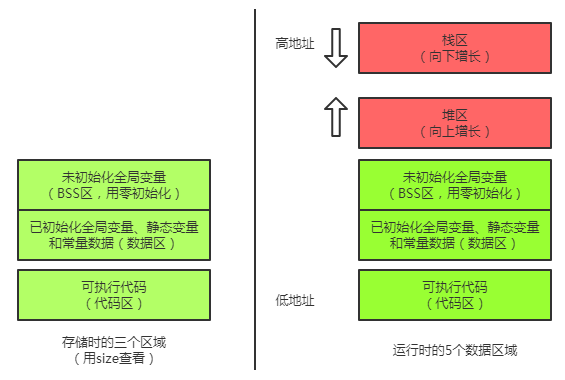

在了解内存管理之前，需要注意C语言中变量类型。
const：常数变量。static：静态变量。
局部变量（函数内部）。全局变量（非函数内部）。

可执行文件(exe)文件中储存在disk时，可以分为代码区(code area)，数据区(data area)，未初始化数据区(BSS).
在执行时，在系统内存中会另外生成栈区(stack)和堆区(heap)。
代码区：存放执行代码。有可能包含一些只读的常数变量。
数据区：存放已初始化全局变量，静态变量和常量数据。
未初始化数据区(BSS)：用来存放未初始化的全局变量。在程序运行时会对全部变量赋值0。
栈区(stack)：存放局部变量以及程序运行时需要的信息（包括函数调用返回地址，传递参数）。由系统自动静态分配。
堆区(heap)：由程序员分配释放。（malloc/free）。
栈/堆区别：
栈由系统控制分配释放，硬件方面有相应的适配，故效率极高。高地址到低地址。
堆有程序员控制分配释放，在执行时可能会存在碎片，因此效率相对较低。低地址到高地址。
内存对齐：
不同平台对对内存空间处理上不同。一些平台对特定类型数据只能从特定地址开始存取。
内存对齐可以减少读取周期，增加效率。
有三条规则：
- 对于结构体，成员偏移量(内存所在位置)应为当前成员类型整数倍。
- 结构体所有数据成员对齐后，本身还要对齐，保证整个结构体占用内存大小是结构体最大数据成员的最小整数倍。
- #pragma pack(n) 预编译指令使得所有成员对齐以n字节为准，不考虑规则二。
举例：1
2
3
4
5
6
7
8
9
10
11struct BU1
{
int number; //4字节
union UBffer
{
char buffer[13]; //填充3字节，该成员占16字节空间
double number;
}ubuf;
int aa; //占4字节空间,当前偏移量已补齐为24
double dou; //占8字节空间
}bu;
sizeof(BU1) = 4 + 4(补充) + 13 + 3(补充) + 4 + 8 + 4(补充)
struct BU2
{
int number; //4字节
union UBffer
{
char buffer[13]; //填充3字节，该成员占16字节空间
int number;
}ubuf;
double aa; //占8字节空间,当前偏移量已补齐为24
int dou; //占4字节空间
}bu;sizeof(BU2) = 4 + 13 + 7(补充) + 8 + 4 + 4(补充)
注意，如果在代码首部加上#pragma pack(1)，sizeof(BU1) = 4 + 13 + 4 + 8, sizeof(BU2) = 4 + 13 + 8 + 4
柔性数组机制，如果最后一个成员为数组，且大小为0，则该结构体大小不计算该数组。
C++中，struct本质上是public class，规定空类大小为1.
C中，空类大小为0.